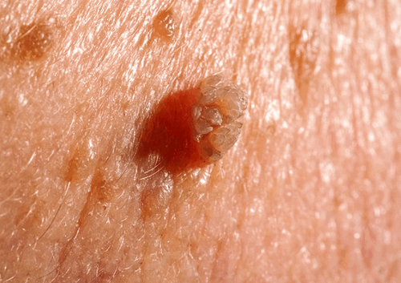

Sùi mào gà là bệnh lây truyền chủ yếu qua đường tình dục. Chính vì thế, thật dễ hiểu khi có đến 90% số các ca mắc sùi mào gà được phát hiện có các dấu hiệu bệnh ở vùng sinh dục. Ở nam giới, sùi mào gà cơ thể phát triển ở dương vật, bao quy đầu hoặc bìu tinh hoàn. Ở nữ giới có thể phát hiện sùi mào gà ở môi lớn, môi nhỏ và xung quanh bộ phận sinh dục.
Theo các chuyên gia bệnh xã hội, sùi mào gà là bệnh có tốc độ lây nhiễm cao và khó kiểm soát nhất trong các bệnh tình dục thường gặp. Hiện y khoa vẫn chưa phát minh ra được vacxin phòng tránh sùi mào gà chính vì thế mọi giải pháp điều trị sùi gà vùng kín chỉ mang tính tạm thời, khả năng tái phát vẫn tồn tại.
Do đó, để có thể phòng tránh sùi mào gà vùng kín chúng ta sẽ cần chú ý tìm hiểu các nguyên nhân gây sùi. Theo đó, virus HPV gây sùi mào gà có thể lây lan theo các con đường sau:
Sùi mào gà vùng kín nam giới sẽ xuất hiện chủ yếu ở thân dương vật, bìu tinh hoàn và cả vùng hậu môn. Nếu các mụn sùi xuất hiện ở rãnh bao quy đầu chúng ta cần chuẩn đoán phân biệt với chuỗi hạt ngọc dương vật (dạng bệnh nam khoa lành tính không cần điều trị).
Dấu hiệu sùi mào gà vùng kín ở nữ giới khá giống với sùi mào gà ở nam giới. Tuy nhiên, các tổn thương sùi mào gà sẽ tập trung ở vùng môi lớn, môi nhỏ của âm đạo và có thể lan dần sang hậu môn. Nữ giới cảm thấy vướng, khó chịu ở cơ quan sinh dục và đau nhức khi quan hệ tình dục.
Do cấu tạo vùng kín nữ nhạy cảm và phức tạp hơn nam giới nên các nốt sùi mào gà dễ vỡ gây ra huyết, nhiễm trùng và tổn thương. Vùng kín nữ sẽ tiết dịch nhiều hơn trong thời kỳ phát triển của bệnh sùi mào gà và từ đó gây ra các chứng viêm phụ khoa, hay như tình trạng hôi vùng sinh dục.
Sùi mào gà vùng kín nam và nữ giới cần được phát hiện, kiểm soát và điều trị một cách an toàn. Chúng ta sẽ cần tìm cho mình một giải pháp điều trị thích hợp để vừa có thể đảm bảo loại bỏ nhanh các triệu chứng sùi mào gà và bảo vệ toàn vẹn chức năng sinh lý của cơ quan sinh dục.
Các phương pháp điều trị sùi mào gà truyền thống như phẫu thuật, đốt điện hay đốt lạnh đều có thể ảnh hưởng đến sinh lý của người bệnh. Và sự ra đời của liệu pháp quang động học ALA-PDT đã mang lại cho người mắc sùi mào gà vùng kín một tia hy vọng mới trong việc điều trị dứt điểm sùi mào gà ở vùng kín.
Liệu pháp quang động học ALA-PDT điều trị sùi mào gà vùng kín một cách an toàn dựa theo nguyên lý: sử dụng ánh sáng nhằm kích hỏa những phân tử có tính nhạy cảm với ánh sáng trong mô tổn thương, tạo ra những phân tử oxy hóa rất mạnh có nhiệm vụ phá hủy tế bào đích.